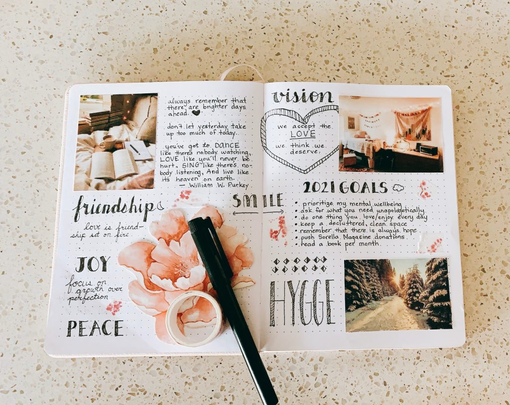
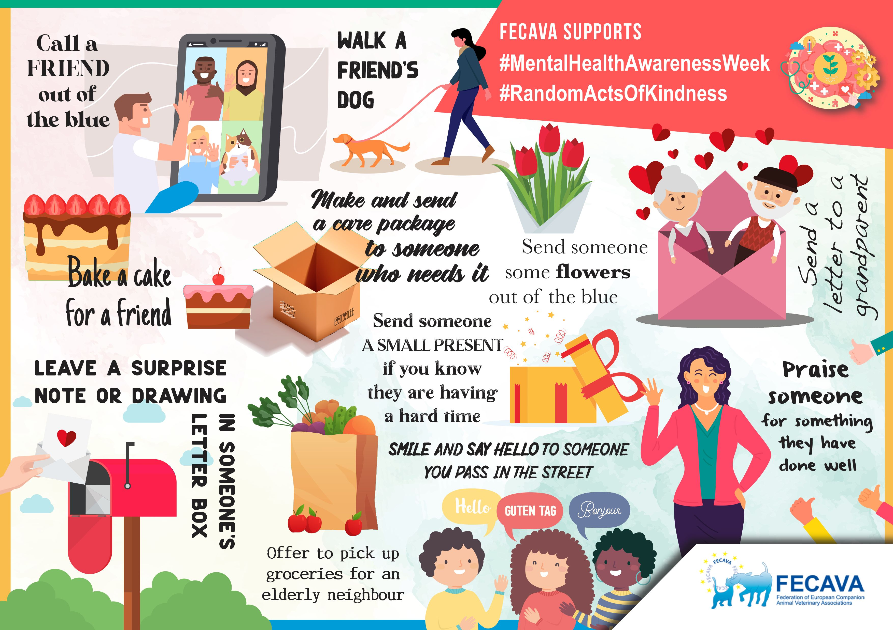
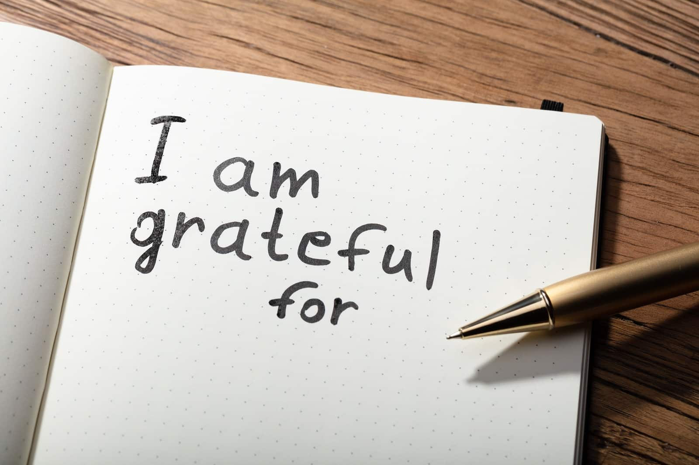

Mental Health Tips
Excerpt from the book The Happiness Equation
How do you be happy first?
For this, we look to the emerging field of positive psychology. What's that? It's not fluffy lollipop experiments. Professors of psychology Martin Seligman and Mihaly Csikszentmihalyi are called the fathers of positive psychology because of their passion for cold hard facts. As they put it themselves in American Psychologist:
“Psychology is not just a branch of medicine concerned with illness or health; it is much larger. It is about work, education, insight, love, growth, and play. And in this quest for what is best, positive psychology does not rely on wishful thinking, faith, self-deception, fads, or hand-waving; it tries to adapt what is best in the scientific method to the unique problems that human behavior presents to those who wish to understand it in all its complexity.”
Positive psychology is a new and growing field.
I have sifted through hundreds of studies to find the Big 7 ways to train your brain to be happy. Many of these studies have been discussed in journals, conference keynotes, and research reports, but I've brought them together for you here.
If you do any of these seven things for two straight weeks, you will feel happier.
So what are the Big 7?
Three Walks
Pennsylvania State researchers reported in the Journal of Sport & Exercise Psychology that the more physically active people are, the greater their general feelings of excitement and enthusiasm. Researcher Amanda Hyde reports, “We found that people who are more physically active have more pleasant-activated feelings than people who are less active, and we also found that people have more pleasant-activated feelings on days when they are more physically active than usual.” It doesn't take much: Half an hour of brisk walking three times a week improves happiness. The American Psychosomatic Society published a study showing how Michael Babyak and a team of doctors found that three thirty-minute brisk walks or jogs even improve recovery from clinical depression. Yes, clinical depression. Results were stronger than studies using medication or studies using exercise and medication combined.
The 20-Minute Replay
Writing for twenty minutes about a positive experience dramatically improves happiness. Why? Because you actually relive the experience as you're writing it and then relive it every time you read it. Your brain sends you back. In a University of Texas study called “How Do I Love Thee? Let Me Count the Words,” researchers Richard Slatcher and James Pennebaker had one member of a couple write about their relationship for twenty minutes three times a day. Compared to the test group, the couple was more likely to engage in intimate dialogue afterward and the relationship was more likely to last. What does the 20-Minute Replay do? It helps us remember things we like about people and experiences in our lives.
Random Acts of Kindness
Carrying out five random acts of kindness a week dramatically improves your happiness. We don't naturally think about paying for someone's coffee, mowing our neighbor's lawn, or writing a thank-you note to our apartment building security guard at Christmas. But Sonja Lyubomirsky, author of The How of Happiness, did a study asking Stanford students to perform five random acts of kindness over a week. Not surprisingly, they reported much higher happiness levels than the test group. Why? They felt good about themselves! People appreciated them. In his book Flourish, Professor Martin Seligman says that “we scientists have found that doing a kindness produces the single most reliable momentary increase in well-being of any exercise we have tested.”
A Complete Unplug
“The richest, happiest and most productive lives are characterized by the ability to fully engage in the challenge at hand, but also to disengage periodically and seek renewal,” say Jim Loehr and Tony Schwartz in The Power of Full Engagement. And a Kansas State University study found that complete downtime after work helps us recharge for the next day. Turning your phone off after dinner. Not using the Internet on vacation. There's a lot more to this, and we're going to chat about it in Secret #6. If you can't wait, flip to here.
Hit Flow

Get into a groove. Be in the zone. Find your flow. However you characterize it, when you're completely absorbed with what you're doing, it means you're being challenged and demonstrating skill at the same time. Mihaly Csikszentmihalyi describes this moment as “being completely involved in an activity for its own sake. The ego falls away. Time flies. Every action, movement, and thought follows inevitably from the previous one, like playing jazz. Your whole being is involved, and you're using your skills to the utmost.” In his book Flow: The Psychology of Optimal Experience, he describes it using above image
2-Minute Meditations
A research team from Massachusetts General Hospital looked at brain scans of people before and after they participated in a course on mindfulness meditation and published the results in Psychiatry Research. What happened? After the course, parts of the brain associated with compassion and self-awareness grew while parts associated with stress shrank. Studies report that meditation can “permanently rewire” your brain to raise levels of happiness.
Five Gratitudes
If you can be happy with simple things, then it will be simple to be happy. Find a book or a journal, or start a website, and write down three to five things you're grateful for from the past week. I wrote five a week on 1000awesomethings.com. Some people write in a notebook by their bedside. Back in 2003, researchers Robert Emmons and Michael McCullough asked groups of students to write down five gratitudes, five hassles, or five events that happened over the past week for ten straight weeks. Guess what happened? The students who wrote five gratitudes were happier and physically healthier. Charles Dickens puts this well: “Reflect upon your present blessings, of which every man has many, not your past misfortunes, of which all men have some.”
Those are the Big 7. You know it's important to be happy first, and these are the seven ways to get there. Remember: Just like driving a car, throwing a football, or doing a headstand—you can learn to be happier.